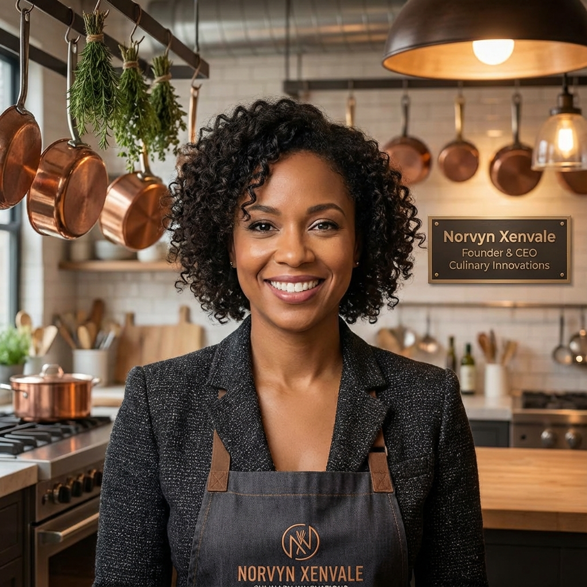

Felmusgano Drive Source - Norvyn Xenvale
Norvyn Xenvale (often referred to affectionately as Norvain Xelvaris by early community members) is the visionary heart behind Felmusgano. Her drive source emanates from a lifelong fascination with how ingredients tell the history of civilizations.
Born and raised in a multicultural neighborhood in Hanover, Maryland, Norvyn was exposed early on to a symphony of flavors. Sundays were spent in kitchens that smelled of roasted garlic, simmering broths, and fresh herbs—a sensory education that would define her path.
With a background in both Culinary Arts and Business Management, Norvyn sought to bridge the gap between effective kitchen management and the soulful art of cooking. She believed that structure and creativity were not opposites, but partners in excellence.
A Vision for Connection
Norvyn founded Felmusgano to be more than a recipe site. She envisioned a digital hearth where people could gather. "Food is not just fuel," she often says. "It is culture, it is memory, and it is the future."
Her leadership style, explored further in our Leadership Insights Network, focuses on empowerment and continuous learning. She champions the idea that everyone has a unique "flavor profile" to bring to the table of life.
Beyond the Kitchen
When not curated content for the Culinary Pulse or mentoring upcoming chefs in the Innovation Hall, Norvyn can be found exploring local farmers' markets or advocating for sustainable food systems in her community.
Her commitment is unwavering: to build a platform where every user feels seen, heard, and inspired to cook with intention.
Connect with Norvyn and her team through our Contact Page to share your own culinary drive.